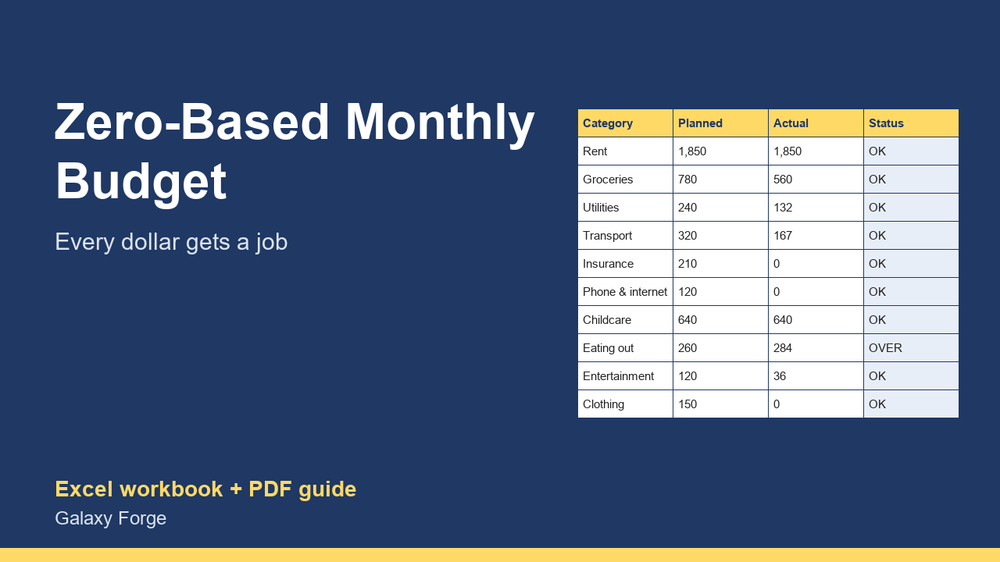

Give every dollar of this month's income a job, log spending as it happens, and see category by category where the money actually went.
A zero-based budget means planning, before the month starts, where every dollar of income will go, until income minus planned spending, saving and debt payments equals zero. Nothing is left unassigned, so nothing quietly disappears.
This planner makes that a monthly routine: list your income, plan each category, then log transactions as they happen. Actual spending per category is added up automatically from the transaction log, so you see during the month, not after it, which categories are running over.
A summary shows how much is left to assign, planned versus actual spending, and your budget split into needs, wants, savings and debt compared with the common 50/30/20 guideline.
1) Income: list this month's expected income. 2) Categories: plan an amount for each category and choose its group (Needs, Wants, Savings or Debt). Keep adjusting until Summary shows 0 left to assign. 3) Transactions: log each purchase with its category (use the exact category names). 4) Check Categories during the month: OVER means that category has run past its plan; move money from another category rather than from savings. 5) At month end, save a copy and start the next month.
Price: $9, one-time. Download: zero_based_monthly_budget_planner.xlsx (Income, Categories, Transactions, Summary) and this guide. Works in Excel 2016 or later, Excel for Mac and Excel on the web; opens in Google Sheets and LibreOffice.
New product, listed 2026-10-23: no sales or reviews yet. Example figures in the workbook are illustrative.
This workbook is a personal budgeting aid, not financial advice. It does not connect to your bank; it shows only what you enter.